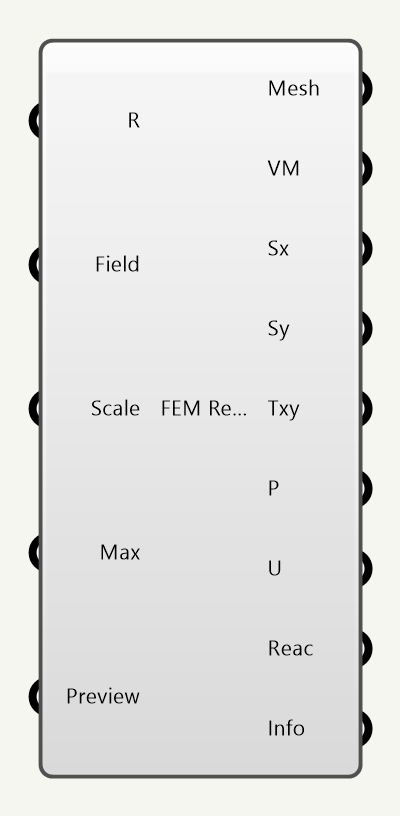

STEP BY STEP / 10 MINUTES
Discuss the results.
What can you defend using the evidence you collected?
Present a concise comparison, distinguish observed results from reference values and propose a justified next check.
Introductory binary candidate: 0.0542592 kg; maximum U ≈ 0.018660 mm.
Files and starting point
- Recovery: complete plate workflow .gh
- Small plate numerical reference .json
- Roof numerical reference .json
Before starting: teaching archives contain the definition, not completed runtime jobs. Select the shared Rhino geometry where needed and run the required stages in order. Keep job folders in place for reports and case selection.
Build and observe
- Open your saved model and worksheet notes. Use the small plate comparison as the common minimum; add the roof observations if you completed them.
- Choose the full-material baseline and the verified binary candidate from the same physical model. Do not compare an unrelated job or relaxed design stress as though it were binary FEM stress.
- Record geometry, units, material, h, thickness, applied force, threshold and which stages you actually ran. If you used reference values, label them explicitly.
- Present mass and maximum displacement for both stages, plus termination and verification status. Use matching field units, legend maximum and deformation scale for visual comparisons.
- Explain one difference between your lesson 01 prediction and the calculated response. A changed understanding is a useful outcome.
- State one unresolved modelling issue and one concrete next check. Examples: loading/support patches, fixed-shape refinement, out-of-plane stability or a connection model.
- Save your Grasshopper definition, the completed worksheet or PDF, and your observation table. Keep the runtime job folder if you need case selection and report access later.
- Give a 30-second evidence-based conclusion to your partner. End with what you would investigate next, rather than declaring the part universally safe.
Follow the data
| From | To / meaning |
|---|---|
| Matching completed baseline + verification | Compare Results |
| Field + units + shared legend + Scale | Comparable result views |
| Model assumptions + numerical evidence | A conclusion with an explicit scope |
Understand the result
Suggested minimum submission: saved Grasshopper definition; completed worksheet/PDF; a baseline-versus-verified comparison with units; and a four-sentence conclusion. Keep reference files unchanged and save personal work under a new name.
Assessment: model and units (5 points), correct stages and numerical evidence (5), controlled comparison and interpretation (5), limitations and reproducible communication (5). Do not grade visual smoothness as proof of accuracy.
Computed reference — introductory plate
120 × 60 × 2 mm; h = 6 mm; steel; 100 N downward; left edge fixed. This table records a Python-worker run of the declared model, not a classroom Rhino UI test.
| Stage | Mass (kg) | Maximum U (mm) | Maximum von Mises (MPa) |
|---|---|---|---|
| Full-material baseline | 0.1130400 | 0.0092775 | 10.557988 |
| Continuous-density design | 0.0452160 | 0.0466591 | relaxed design surrogate |
| Binary verification T = 0.40 | 0.0542592 | 0.0186599 | 20.314921 |
Inputs and numerical reference. Relaxed optimisation stress is deliberately not presented as a comparable full-material stress value.
Components in this lesson



These are native Grasshopper capsule renderings of the actual components, not screenshots of a running solve.
Checkpoint
- Comparison uses matching baseline and verified candidate.
- Numbers include units and provenance (own run or supplied reference).
- The conclusion contains evidence, one limitation and one next action.
- Saved files and notes make the work understandable to another person.